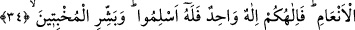
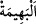

34. Biz, her ümmete -(kurban kesmeye uygun) hayvan cinsinden kendilerine rızık
olarak verdiklerimiz üzerine Allah’ın adını ansınlar diye- kurban kesmeyi gerekli
kıldık. İmdi, İlâhınız, bir tek İlâh’tır. Öyle ise, O’na teslim olun. (Ey Muhammed!)
O ihlâslı ve mütevazi insanları müjdele!
“Biz, her ümmete” ümmetlerden bir kısmını dışarıda bırakıp bazılarına değil bütün
ümmetlere “-(kurban kesmeye uygun) hayvan cinsinden kendilerine rızık olarak
verdiklerimiz üzerine” boğazlandıkları sırada, başkasını değil özellikle “Allah’ın adını
ansınlar” kurbanlarını Allah için yapsınlar “diye- kurban kesmeyi” kendileriyle
Allah’a yaklaşmaları için ibâdet mahallerini ve kurban ibâdetini “gerekli kıldık.”
Bundan maksad Allah Teâlâ’nın rızası için kan akıtmaktır. Yâni biz îman eden her
ümmet için Allah Teâlâ için kurban kesmeyi gerekli kıldık.
Âyette “ümmet” kelimesinin öne alınması tahsis içindir. Kurban kesmenin gerekli
kılınmasının Allah’ın adını anma sebebine bağlanması ise ibadet ve kurbanlardan asıl
maksadın mâbûdu anmak olduğunu hatırlatmak maksadıyladır.
“ kelimesinin “ a izâfe edilerek açıkça beyan edilmesi, kurbanların “(koyun, keçi, deve ve sığır)”dan olması gerektiğini tenbih içindir. En‘âmdan olmayan at,
a izâfe edilerek açıkça beyan edilmesi, kurbanların “(koyun, keçi, deve ve sığır)”dan olması gerektiğini tenbih içindir. En‘âmdan olmayan at,
katır ve merkeplerin ise kurban olarak kesilmesi câiz değildir.
et-Te’vîlâtü’n-Necmiyye’de der ki: “Tabakalarının farklılığına göre her salik için bir
yol, makam ve yakınlık (kurbet) kıldık. Onlardan kimi muâmelât yolundan Allah’ı taleb
eder. Kimi O’nu mücâhedât kapısından taleb eder. Kimi de O’nu O’nunla taleb eder.
Böyle yaptık ki onlardan her topluluk taleb konusunda zikrullah ile nefsi kahretmek,
hayvânî ve en‘âmî sıfatlarını kırmak cinsinden Allah’ın kendilerine rızık olarak
verdiklerine sarılsınlar. Çünkü onlar tabakalarının farklılığına göre menzillerine ve
makamlarına ancak nefsi kahretmek ve sıfatlarını kırmak ile ulaşabilirler. Onun için de
Allah’ın kendilerini rızıklandırdığı nefsi kahretmek, makamların üzerine çıkmak ve
kemâlâta ermek üzere O’nu hamd ve senâ ile zikrederler.
“İmdi, İlâhınız, bir tek İlâh’tır.” Zâtında ve sıfatlarında hiçbir şeyin ona ortak olması
mümkün değildir. Aksi halde âlemde görülen nizam bozulurdu. “Öyle ise, O’na teslim
olun.” Yâni ilâhınız bir tek ilah olduğuna göre takarrubu veya zikri O’nun zâtına has
kılın, ortak koşmayı ona bulaştırmayın. O’na itâat edin, emrini yerine getirin ve kurbana
şirk karıştırmayın.
et-Te’vîlâtü’n-Necmiyye’de der ki: “İslâm, ihlâs mânâsına da gelir. İhlâs, amelleri
âfetlerden, ahlâkı bulanıklıklardan, halleri iltifatlardan ve nefesleri ağyardan tasfiye